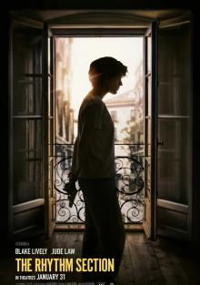

Максу 38 лет, и двадцать пять из них он не расстается с камерой, снимая честный фильм о своей жизни.
В один особенный день Макс включает старые записи, чтобы всё вспомнить и решиться на важный шаг.
Актер-комик и певец Макс Бублиль в ностальгической французской комедии «Жизнь на перемотке».
Максу 38 лет, и двадцать пять из них он не расстается с камерой, снимая честный фильм о своей жизни.
В один особенный день Макс включает старые записи, чтобы всё вспомнить и решиться на важный шаг.
Актер-комик и певец Макс Бублиль в ностальгической французской комедии «Жизнь на перемотке».
 Бывший баскетболист Джек Каннингэм давно ушел из спорта, расстался с женой и пристрастился к
алкоголю. У него появляется шанс на спасение, когда ему предлагают стать тренером неудачливой
школьной команды. Лауреат премии «Оскар» Бен Аффлек в спортивной драме о зависимости, падении и
надежде «Вне игры», где он также выступил одним из продюсеров. Фильм снял режиссер «Расплаты» и
«Воина» Гэвин О’Коннор.
Бывший баскетболист Джек Каннингэм давно ушел из спорта, расстался с женой и пристрастился к
алкоголю. У него появляется шанс на спасение, когда ему предлагают стать тренером неудачливой
школьной команды. Лауреат премии «Оскар» Бен Аффлек в спортивной драме о зависимости, падении и
надежде «Вне игры», где он также выступил одним из продюсеров. Фильм снял режиссер «Расплаты» и
«Воина» Гэвин О’Коннор.
 История основателя сети McDonald's Рэя Крока, прошедшего путь от коммивояжера, торгующего миксерами,
до одного из самых успешных бизнесменов в мире, главы целой империи ресторанов быстрого питания. Рэю
уже за пятьдесят, и всю свою жизнь он перебивался с одной работы на другую, пока однажды ему не
улыбнулась удача. Проявляя незаурядные предпринимательские способности и
настойчивость, он продвигает свой проект, которому суждено уже в ближайшем будущем превратиться в
гигантскую сеть ресторанов быстрого питания и принести своему создателю несчетные миллионы.
История основателя сети McDonald's Рэя Крока, прошедшего путь от коммивояжера, торгующего миксерами,
до одного из самых успешных бизнесменов в мире, главы целой империи ресторанов быстрого питания. Рэю
уже за пятьдесят, и всю свою жизнь он перебивался с одной работы на другую, пока однажды ему не
улыбнулась удача. Проявляя незаурядные предпринимательские способности и
настойчивость, он продвигает свой проект, которому суждено уже в ближайшем будущем превратиться в
гигантскую сеть ресторанов быстрого питания и принести своему создателю несчетные миллионы.

Потеряв семью в авиакатастрофе, молодая женщина по имени Стефани встаёт на путь саморазрушения,
увлекаясь алкоголем и наркотиками. В её жизни появляется новая цель, когда она узнаёт, что крушение
самолёта не было случайностью. Теперь Стефани готова пойти на всё, чтобы виновные понесли смертельное
наказание…